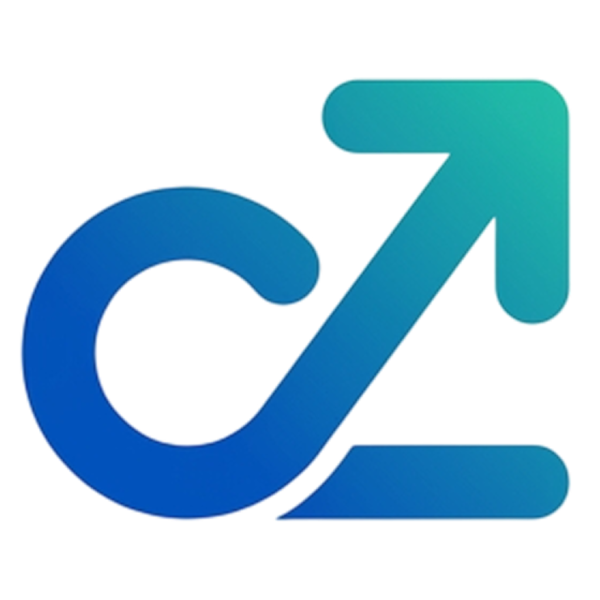

✳
Find your signals.
Explore your interests and tendencies with CareerZ Compass. Understand why a career direction might be worth trying.

CareerZIN THE MAKINGA little clarity. A meaningful next step.
You don’t need to have your whole future figured out. Discover where your strengths meet your interests—and start building from there.
Designed for students & fresh graduates · Coming to iOS
YOUR CAREER COMPASS
Start with what makes you, you.
ILLUSTRATIVE MATCH
Concept preview · Not an assessment result
FOR THE “I COULD DO SO MANY THINGS” GENERATION
Coding. Design. Data. Product. You’ve tried a little of everything. CareerZ is being built to help you connect those experiences, explore a direction, and figure out what to work on next.
FROM POSSIBILITIES TO PROGRESS
You bring the curiosity.
CareerZ helps you find the thread.
Explore your interests and tendencies with CareerZ Compass. Understand why a career direction might be worth trying.
Explore career matches and choose a direction to develop. It’s a starting point—not a label for the rest of your life.
Assess your skills, identify gaps, and follow practical missions. Build evidence, reflect, and reassess as you grow.
SIX DIRECTIONS. ROOM TO EXPLORE.
Planned discovery domains. The first complete skill-development journey is being built around Product Management.
LESS “SOMEDAY.” MORE “WHAT’S NEXT?”
Learn just enough to take action. Work on a real problem, create something reviewable, and build a portfolio that shows how you think.
↗ Practical missions with a clear output
↗ Progress grounded in your own activity
↗ Designed for local, offline progress
Define the user, the context, and the outcome.
Output: a problem statementInterview potential users and synthesize insights.
Output: interview notes & insightsConnect the problem, decisions, and reflection.
Output: a product case studyA FEW THINGS TO KNOW
Not yet. CareerZ is in development, growing from an Apple Developer Academy prototype into a functional iOS app. This page previews the product direction.
No. Compass is intended to suggest directions worth exploring based on your answers. It is not a psychological assessment, a prediction of success, or a decision made for you.
The planned v1 stores assessment history and roadmap progress on your device, with no account required. Cloud sync and AI recommendations are outside the v1 scope.
Students and fresh graduates exploring technology careers—especially those with several interests who want a clearer place to start.
YOUR PATH DOESN’T HAVE TO BE PERFECT.
Discover → Decide → Develop
Explore the CareerZ journey ↗iOS app in development